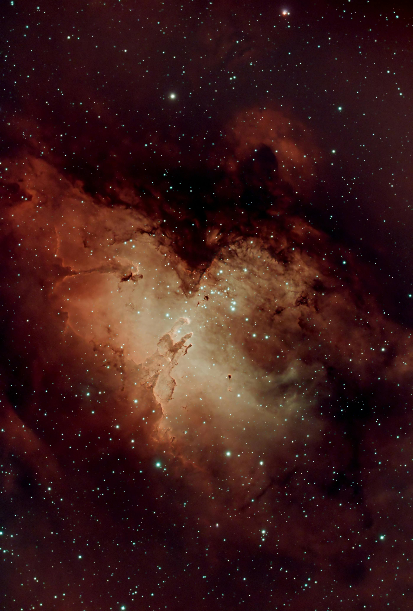

✪ NASA Imagery
Discover the Cosmos
Explore NASA's Astronomy Picture of the Day. Journey through space and time with every click.
🔭
Fetching data from NASA...
✓ Success: Image loaded successfully!

The Pillars of Creation
OCTOBER 19, 2022
This is a prototype view. In the final version, this section would display real data from NASA's servers including high-resolution imagery and scientific explanations.